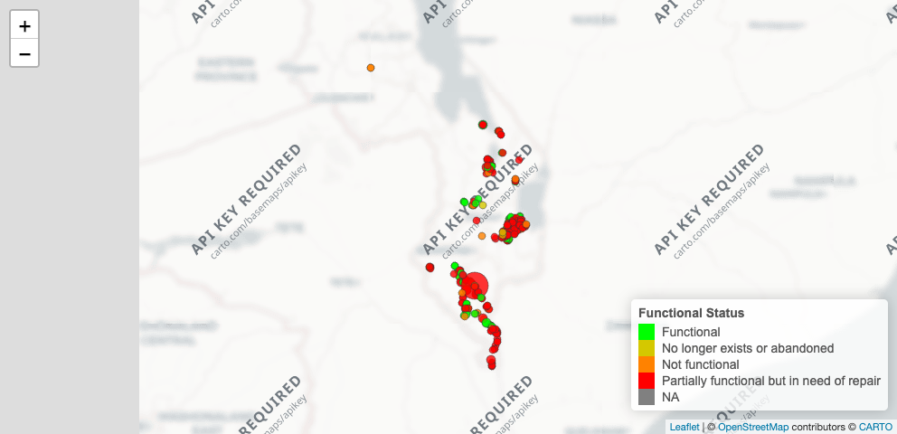

This dataset contains water point assessment data collected during an emergency flood response in Malawi between 2019 and 2020. The survey was conducted under the BASEflow program to evaluate the status, functionality, and safety of water points affected by flooding events.
Data collection and subsequent data cleaning were conducted using the mWater platform. The dataset includes geospatial coordinates, functionality status, user population estimates, reported mechanical and structural issues, pumping performance metrics, sediment observations, and field-based water quality test information.
The survey covered the following districts in Malawi:
Zomba
Mangochi
Chikwawa
Balaka
Nsanje
Blantyre
Machinga
The primary purpose of this dataset is to support emergency response planning, infrastructure rehabilitation prioritization, and monitoring of rural water supply systems in flood-affected areas.
This dataset can be used for:
Humanitarian WASH (Water, Sanitation, and Hygiene) response analysis
Geospatial mapping of water point functionality
Infrastructure vulnerability assessments
Evidence-based resource allocation during disaster recovery
Installation
You can install the development version of mwefloodresponse from GitHub with:
# install.packages("devtools")
devtools::install_github("openwashdata/mwefloodresponse")
## Run the following code in console if you don't have the packages
## install.packages(c("dplyr", "knitr", "readr", "stringr", "gt", "kableExtra"))
library(dplyr)
library(knitr)
library(readr)
library(stringr)
library(gt)
library(kableExtra)Alternatively, you can download the individual datasets as a CSV or XLSX file from the table below.
- Click Download CSV. A window opens that displays the CSV in your browser.
- Right-click anywhere inside the window and select “Save Page As…”.
- Save the file in a folder of your choice.
| dataset | CSV | XLSX |
|---|---|---|
| mwefloodresponse | Download CSV | Download XLSX |
Data
The package provides access to water point assessment data collected during an emergency flood response in Malawi between 2019 and 2020.
metadata
The dataset mwefloodresponse contains 319 observations and 40 variables
mwefloodresponse |>
head(3) |>
gt::gt() |>
gt::as_raw_html()| submitted_on | district | community | people_using | photo_water_point | latitude | longitude | depth | currently_submerged | likely_submerged | functional_status | water_pump_possible | problems_reported | water_quality_problems | civil_works_problems | photo_civil_works | pump_problems | photo_pump_problems | pump_operational_feel | time_to_pump_20l | strokes_to_yield | sediment_presence | water_quality_tests | electrical_conductivity | conductivity_units | total_dissolved_solids | ph | temperature_c | turbidity_tube | turbidity_tube_units | turbidity_electronic_ntu | comments | microbiological_test | test_method | sample_type | sample_date | color_change_mpn | color_change_upper95 | color_change_health | color_change_image |
|---|---|---|---|---|---|---|---|---|---|---|---|---|---|---|---|---|---|---|---|---|---|---|---|---|---|---|---|---|---|---|---|---|---|---|---|---|---|---|---|
For an overview of the variable names, see the following table.
readr::read_csv("data-raw/dictionary.csv") |>
dplyr::filter(file_name == "mwefloodresponse.rda") |>
dplyr::select(variable_name:description) |>
knitr::kable() |>
kableExtra::kable_styling("striped") |>
kableExtra::scroll_box(height = "200px")
#> Rows: 40 Columns: 5
#> ── Column specification ────────────────────────────────────────────────────────
#> Delimiter: ","
#> chr (5): directory, file_name, variable_name, variable_type, description
#>
#> ℹ Use `spec()` to retrieve the full column specification for this data.
#> ℹ Specify the column types or set `show_col_types = FALSE` to quiet this message.| variable_name | variable_type | description |
|---|---|---|
| submitted_on | character | Date and time the survey record was submitted |
| district | character | Administrative district where the water point is located |
| community | character | Name of the local community or village |
| people_using | numeric | Number of people currently using the water point |
| photo_water_point | character | link of photo showing the water point |
| latitude | numeric | GPS latitude of the water point |
| longitude | numeric | GPS longitude of the water point |
| depth | numeric | Measured depth of the water source |
| currently_submerged | character | Indicator of whether the water point is submerged at the time of survey |
| likely_submerged | character | Assessment of whether the water point was submerged during the recent flooding |
| functional_status | character | Operational status of the water point |
| water_pump_possible | character | Ability to pump water at the time of the visit |
| problems_reported | character | Observed or reported problems at the water point |
| water_quality_problems | character | Issues affecting water quality |
| civil_works_problems | character | Problems affecting the water point infrastructure |
| photo_civil_works | character | link of photo showing civil works problems |
| pump_problems | character | Problems observed with the water pump |
| photo_pump_problems | character | link of photo showing pump problems |
| pump_operational_feel | character | Subjective assessment of the pump operation |
| time_to_pump_20l | numeric | Time taken to pump 20 liters of water |
| strokes_to_yield | numeric | Number of strokes required to yield water |
| sediment_presence | character | Presence or absence of sediment in the water |
| water_quality_tests | character | Field tests performed on water quality |
| electrical_conductivity | numeric | Measured electrical conductivity of the water |
| conductivity_units | character | Units used for electrical conductivity measurement |
| total_dissolved_solids | numeric | Measured total dissolved solids in water |
| ph | numeric | Measured pH of the water |
| temperature_c | numeric | Water temperature in Celsius |
| turbidity_tube | numeric | Turbidity measured using a tube method |
| turbidity_tube_units | character | Units used for turbidity tube measurement |
| turbidity_electronic_ntu | numeric | Turbidity measured using an electronic turbidimeter |
| comments | character | Additional observations recorded by the surveyor |
| microbiological_test | character | Type of microbiological test performed |
| test_method | character | Method used to perform the microbiological test |
| sample_type | character | Type of water sample collected |
| sample_date | character | Date the water sample was collected |
| color_change_mpn | numeric | MPN count from color-change test indicating bacterial contamination |
| color_change_upper95 | numeric | Upper 95 percent confidence interval for MPN count |
| color_change_health | character | Health risk classification based on color-change results |
| color_change_image | character | link of photo showing compartments that changed color |
Example
library(mwefloodresponse)
# Visualization 1: Map of Water Points
# Show waterpoint functionality
# Load required libraries
library(leaflet)
library(dplyr)
library(htmltools)
library(scales)
# Validate coordinates
df <- mwefloodresponse %>%
mutate(
latitude = as.numeric(latitude),
longitude = as.numeric(longitude),
people_using = as.numeric(people_using)
) %>%
filter(!is.na(latitude), !is.na(longitude))
# Assign specific colors to each functional status category
status_pal <- colorFactor(
palette = c(
"Functional" = "green",
"Partially Functional" = "orange",
"Not Functional" = "red"
),
domain = df$functional_status
)
# Rescale number of people using the water point
# Bubble size will range between 4 and 15
df <- df %>%
mutate(
people_scaled = rescale(people_using, to = c(4, 15))
)
# Displays district, community, status, population, problems, and water quality result
df <- df %>%
mutate(
popup_content = paste0(
"<b>District:</b> ", district, "<br>",
"<b>Community:</b> ", community, "<br>",
"<b>Functional Status:</b> ", functional_status, "<br>",
"<b>People Using:</b> ", people_using, "<br>",
"<b>Problems Reported:</b> ",
ifelse(is.na(problems_reported), "None reported", problems_reported), "<br>",
"<b>Water Quality Result:</b> ",
ifelse(is.na(color_change_health), "No test result", color_change_health)
)
)
leaflet(df) %>%
# Add base map tiles
addProviderTiles("CartoDB.Positron") %>%
# Add circle markers for each water point
addCircleMarkers(
lng = ~longitude,
lat = ~latitude,
radius = ~people_scaled,
fillColor = ~status_pal(functional_status),
color = "#333333",
weight = 1,
fillOpacity = 0.8,
popup = ~HTML(popup_content)
) %>%
# Add legend to explain functional status colors
addLegend(
"bottomright",
pal = status_pal,
values = ~functional_status,
title = "Functional Status",
opacity = 1
)
License
Data are available as CC-BY.
Citation
Please cite this package using:
citation("mwefloodresponse")
#> To cite package 'mwefloodresponse' in publications use:
#>
#> Mhango E (2026). "mwefloodresponse: Malawi Emergency Flood Response
#> Water Point Survey (2019–2020)." doi:10.5281/zenodo.18755616
#> <https://doi.org/10.5281/zenodo.18755616>.
#> <https://github.com/openwashdata/mwefloodresponse>.
#>
#> A BibTeX entry for LaTeX users is
#>
#> @Misc{mhango:2026,
#> title = {mwefloodresponse: Malawi Emergency Flood Response Water Point Survey (2019–2020)},
#> author = {Emmanuel Mhango},
#> year = {2026},
#> doi = {10.5281/zenodo.18755616},
#> url = {https://github.com/openwashdata/mwefloodresponse},
#> abstract = {This dataset contains water point assessment data collected during an emergency flood response in Malawi between 2019 and 2020. The survey was conducted under the BASEflow program to evaluate the status, functionality, and safety of water points affected by flooding events.},
#> keywords = {open data,washdata,floods,emergency response,water points,water quality,Malawi,sanitation,wash,water},
#> version = {0.0.0.9000},
#> }